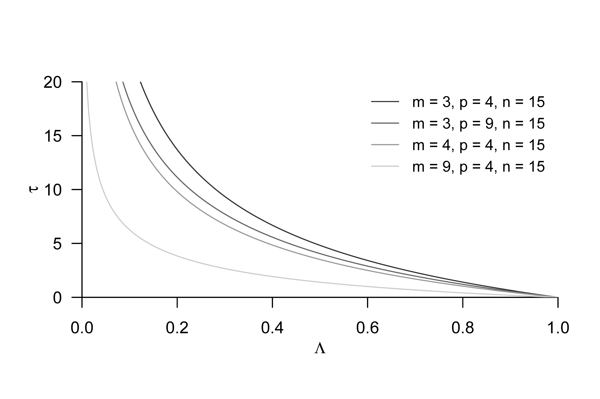
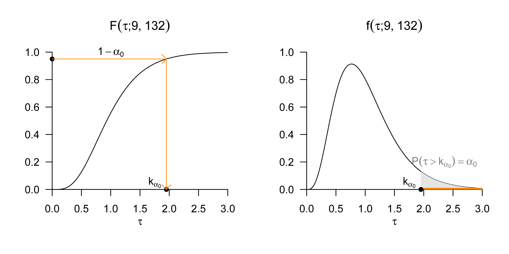

| COND | dBDI | dGLU |
|---|---|---|
| F2F | 11 | 4.3 |
| F2F | 10 | 3.9 |
| F2F | 12 | 3.5 |
| F2F | 7 | 2.6 |
| F2F | 10 | 3.3 |
| F2F | 12 | 3.5 |
| F2F | 9 | 3.1 |
| F2F | 9 | 3.6 |
| F2F | 9 | 5.6 |
| F2F | 11 | 3.6 |
| F2F | 7 | 3.4 |
| F2F | 9 | 4.0 |
| F2F | 11 | 5.6 |
| F2F | 14 | 5.3 |
| F2F | 8 | 3.2 |
| ONL | 6 | 3.1 |
| ONL | 8 | 2.7 |
| ONL | 7 | 2.1 |
| ONL | 8 | 3.1 |
| ONL | 11 | 2.8 |
| ONL | 9 | 2.8 |
| ONL | 9 | 3.7 |
| ONL | 8 | 2.7 |
| ONL | 6 | 3.6 |
| ONL | 7 | 1.4 |
| ONL | 9 | 1.3 |
| ONL | 8 | 3.4 |
| ONL | 7 | 3.7 |
| ONL | 7 | 2.3 |
| ONL | 9 | 3.4 |
| WLC | -2 | 0.7 |
| WLC | 2 | 1.4 |
| WLC | 1 | 1.0 |
| WLC | 2 | 0.9 |
| WLC | 3 | 1.6 |
| WLC | 2 | 1.6 |
| WLC | 5 | 1.1 |
| WLC | -1 | -0.2 |
| WLC | 2 | 2.5 |
| WLC | -2 | 0.4 |
| WLC | 1 | 0.7 |
| WLC | 3 | -0.1 |
| WLC | 1 | 1.3 |
| WLC | 4 | 0.6 |
| WLC | 4 | 0.7 |
47 One-way analysis of variance
47.1 Application scenario
The application scenario of a one-way multivariate analysis of variance is characterized by multivariate data points from two or more groups of randomized experimental units that differ with respect to the levels of an experimental factor. If the number of data points in each group is equal, one speaks of a balanced one-way multivariate analysis-of-variance design. The data points of the ith group or the ith factor level are assumed to be realizations of \(n_i\) independent and identically multivariate normally distributed random vectors whose true, but unknown, expected-value parameters may differ across groups and whose true, but unknown, covariance-matrix parameter is identical across groups. In these basic assumptions, the application scenario of one-way multivariate analysis of variance is therefore a generalization of the one-sample T\(^2\) test scenario to two or more groups of experimental units. It is fundamentally assumed that there is interest in an inferential comparison of the true, but unknown, factor-level-specific expected-value parameters.
Application example
As a concrete application example, we consider the analysis of pre-post intervention BDI score and pre-post intervention glucocorticoid plasma-level difference values from three groups of 15 patients each, who underwent different psychotherapy settings (face-to-face and online) or a waitlist control condition. For this purpose, Table 47.1 shows a simulated example data set. The first column of Table 47.1 (COND) lists the specific therapy setting (F2F: face-to-face, ONL: online, WLC: waitlist control) of the patients. The second column (dBDI) lists the corresponding BDI score difference values, and the third column (dGLU) lists the corresponding glucocorticoid plasma-level difference values. In both cases, positive values indicate a decrease in depressive symptomatology, whereas negative values indicate an increase in depressive symptomatology. Figure 47.1 visualizes this data set as well as the group-specific sample means and sample covariances as normal distribution isocontours.
The following R code demonstrates the evaluation of group-specific descriptive statistics for this data set.
# study-group-specific descriptive statistics
D = read.csv("./_data/703-one-way-analysis-of-variance.csv") # read data
m = 2 # data dimension of interest
p = 3 # number of groups
k = 15 # number of data points per group
Y = array(dim = c(m,k,p)) # data-array initialization
Y[,,1] = rbind(D$dBDI[D$COND == "F2F"], # F2F dBDI values
D$dGLU[D$COND == "F2F"]) # F2F dGLU values
Y[,,2] = rbind(D$dBDI[D$COND == "ONL"], # ONL dBDI values
D$dGLU[D$COND == "ONL"]) # ONL dGLU values
Y[,,3] = rbind(D$dBDI[D$COND == "WLC"], # WLC dBDI values
D$dGLU[D$COND == "WLC"]) # WLC dGLU values
y_bar_i = array(dim = c(m,p)) # sample-mean array
C_i = array(dim = c(m,m,p)) # sample-covariance-matrices array
j_k = matrix(rep(1,k), nrow = k) # 1_{l}
I_k = diag(k) # identity matrix I_l
J_k = matrix(rep(1,k^2), nrow = k) # 1_{ll}
for (i in 1:p){ # group iterations
y_bar_i[,i] = (1/k)*(Y[,,i] %*% j_k) # sample mean \bar{y}_i
C_i[,,i] = (1/(k-1))*(Y[,,i] %*% (I_k-(1/k)*J_k) %*% t(Y[,,i]))} # sample covariance matrix C_i
dBDI, dGLU data of the example data set. Each point visualizes the data of one patient. The sample covariance is shown by the 0.7 isocontour of a two-dimensional normal distribution whose expected-value parameter and covariance-matrix parameter correspond to the sample mean and sample covariance of the respective group.
47.2 Model formulation and model estimation
We define the model of one-way multivariate analysis of variance as follows.
Definition 47.1 (Model of one-way multivariate analysis of variance) For \(i = 1,...,p\) and \(j = 1,...,n_i\), let \(y_{ij}\) be \(m\)-dimensional random vectors that model the \(n := \sum_{i=1}^p n_i\) \(m\)-dimensional data points of a one-way multivariate analysis-of-variance scenario. Then the model of one-way multivariate analysis of variance has the structural form \[\begin{equation} y_{ij} = \mu_i + \varepsilon_{ij} \mbox{ with } \varepsilon_{ij} \sim N(0_m,\Sigma) \mbox{ i.i.d. } \mbox{ with } \mu_i \in \mathbb{R}^m \mbox{ and } \Sigma \in \mathbb{R}^{m \times m} \mbox{ pd } \end{equation}\] and the data distribution form \[\begin{equation} y_{ij} \sim N(\mu_i,\Sigma) \mbox{ independently distributed with } \mu_i \in \mathbb{R}^m \mbox{ and } \Sigma \in \mathbb{R}^{m \times m} \mbox{ pd}. \end{equation}\]
In Definition 47.1, \(n_i\) denotes the number of random vectors \(y_{ij}\) in the \(i\)th of \(p\) groups of experimental units. In the case of a balanced design, evidently \(n_1 = \cdots = n_p\). In this case, for simplicity, we set \(k := n_i\) for \(i = 1,...,p\). The total number of random vectors is then \(n = pk\). The equivalence of the structural form and the data distribution form of one-way multivariate analysis of variance follows from Theorem 29.8 by transforming the \(\varepsilon_{ij}\) under multiplication with the identity matrix and addition of the respective group-specific expected-value parameters. The true, but unknown, parameters \(\mu_i, i = 1,...,p\) and \(\Sigma\) of the one-way multivariate analysis-of-variance model can be estimated using the estimators defined in the following theorem.
Theorem 47.1 (Parameter estimators of one-way multivariate analysis of variance) Given the model of one-way multivariate analysis of variance, for \(i = 1,...,p\), \[\begin{equation} \hat{\mu}_i := \frac{1}{n_i}\sum_{j = 1}^{n_i} y_{ij} \end{equation}\] is an unbiased estimator of the group-specific expected-value parameter \(\mu_i\), and \[\begin{equation} \hat{\Sigma} := \frac{1}{n-p}\sum_{i = 1}^p \sum_{j = 1}^{n_i} \left(y_{ij} - \hat{\mu}_i\right)\left(y_{ij} - \hat{\mu}_i\right)^T \end{equation}\] is an unbiased estimator of the covariance-matrix parameter \(\Sigma\).
In Theorem 47.1, \(\hat{\mu}_i\) is evidently the sample mean of the random vectors of the \(i\)th group. \(\hat{\Sigma}\) is the group-unspecific sample covariance matrix of all random vectors and corresponds to the within-group sum-of-squares matrix scaled by \(1/(n-p)\), which we will introduce in Theorem 47.2. The following R code demonstrates the evaluation of the parameter estimators using an R function.
estimate = function(Y){
# this function evaluates the parameter estimators of a one-way
# multivariate analysis of variance based on an m x k x p data set Y.
#
# input
# Y : m x k x p data array
#
# output
# $mu_hat : m x p \mu_i parameter estimators
# $Sigma_hat : m x m \Sigma parameter estimator
# ---------------------------------------------------------------------------
# dimension parameters
d = dim(Y) # data-set dimensions
m = d[1] # data dimension
k = d[2] # number of data points per group
p = d[3] # number of groups
# expected-value-parameter estimators
mu_hat_i = matrix(apply(Y,3,rowMeans), nrow = m)
# covariance-matrix-parameter estimator
Sigma_hat = matrix(rep(0,m*m), nrow = m)
for(i in 1:p){
for(j in 1:k){
Sigma_hat = Sigma_hat + (1/(k*p-p))*(Y[,j,i] - mu_hat_i[,i]) %*% t(Y[,j,i] - mu_hat_i[,i])
}
}
# output specification
return(list(mu_hat_i = mu_hat_i, Sigma_hat = Sigma_hat))}Instead of a proof, we validate the statement of Theorem 47.1 by example using the following R simulation, in which we approximate the expectations of the estimators by their sample means across data-set realizations.
# model parameters
library(MASS) # multivariate normal distributions
p = 3 # number of groups
k = 15 # number of data points per group
m = 2 # data dimension
mu_i = matrix(c(1,2,2,1,3,2.5), ncol = p) # expected-value parameters
Sigma = matrix(c(1,.5,.5,1) , ncol = m) # covariance-matrix parameter
# simulation parameters and arrays
nsm = 1e2 # number of simulations
mu_hat_is = array(dim = c(m,p,nsm)) # \hat{\mu}_i array
Sigma_hats = array(dim = c(m,m,nsm)) # \hat{\Sigma} array
# simulations
for(s in 1:nsm){
# data generation
Y = array(dim = c(m,k,p)) # data array
for(i in 1:p){
Y[,,i] = t(mvrnorm(k,mu_i[,i],Sigma)) # data generation
}
S = estimate(Y) # parameter estimation
mu_hat_is[,,s] = S$mu_hat_i # \hat{\mu}_i
Sigma_hats[,,s] = S$Sigma_hat # \hat{\Sigma}
}
# estimator-expectation estimation
E_hat_mu_i_hat = apply(mu_hat_is , c(1,2), mean)
E_hat_Sigma_hat = apply(Sigma_hats, c(1,2), mean)As shown in Figure 47.2, even with the relatively small simulation effort of 100 data-set realizations, there is already good correspondence between the true, but unknown, parameter values \(\mu_i, i = 1,...,p\) and \(\Sigma\) and the approximated expected values of the estimators \(\mathbb{E}(\hat{\mu}_i)\) for \(i = 1,...,p\) and \(\mathbb{E}(\hat{\Sigma})\).

Applying the parameter estimation to the data of the example data set in Table 47.1 yields the following results.
[,1] [,2] [,3]
[1,] 9.933333 7.933333 1.6666667
[2,] 3.900525 2.803179 0.9594878 [,1] [,2]
[1,] 3.3142857 0.4022937
[2,] 0.4022937 0.638133647.3 Model evaluation
The primary goal of a one-way multivariate analysis of variance is usually to test the null hypothesis \[\begin{equation} H_0 : \mu_1 = \cdots = \mu_p. \end{equation}\] This null hypothesis states that there are no differences between the true, but unknown, expected-value parameters of the sample groups. The alternative hypothesis is thus \[\begin{align} \begin{split} H_1 : \mu_{i_l} \neq \mu_{j_l} & \mbox{ for at least one pair } i,j \mbox{ with } i \neq j, 1 \le i,j \le p \\ & \mbox{ and at least one } l \mbox{ with } 1 \le l \le m. \end{split} \end{align}\] The alternative hypothesis therefore states that at least two true, but unknown, expected-value parameters differ in at least one of their components. As is known from the context of univariate one-way analysis of variance, rejecting the null hypothesis here also does not imply any statement about the exact form of the inferred expected-value-parameter difference.
Within one-way multivariate analysis of variance, tests of the null hypothesis can be constructed using different test statistics. What these test statistics have in common is that they are based on a generalization of the sum-of-squares decomposition of one-way analysis of variance known from the univariate case. In the next section, we first introduce this so-called cross-product sum matrix decomposition of one-way multivariate analysis of variance. Subsequently, we consider model evaluation using Wilks’ \(\Lambda\) statistic.
Cross-product sum matrix decomposition
The following theorem generalizes the sum-of-squares decomposition of one-way analysis of variance to the multivariate application scenario.
Theorem 47.2 (Cross-product sum matrix decomposition)
Given the model of one-way multivariate analysis of variance. Furthermore, let \[\begin{equation} \bar{y} := \frac{1}{n}\sum_{i = 1}^p \sum_{j = 1}^{n_i} y_{ij} \mbox{ and } \bar{y}_i := \frac{1}{n_i} \sum_{j = 1}^{n_i} y_{ij} \end{equation}\] be the and the , respectively. Finally, letThen \[\begin{equation} T = B + W. \end{equation}\]
Proof. It holds that \[\begin{align} \begin{split} T & = \sum_{i=1}^p \sum_{j=1}^{n_i}(y_{ij}-\bar{y})(y_{ij}-\bar{y})^T \\ & = \sum_{i=1}^p \sum_{j=1}^{n_i} (y_{ij}-\bar{y}_i+\bar{y}_i-\bar{y})(y_{ij}-\bar{y}_i+\bar{y}_i-\bar{y})^T \\ & = \sum_{i=1}^p \sum_{j=1}^{n_i} \left((y_{ij}-\bar{y}_i)+(\bar{y}_i-\bar{y})\right)\left((y_{ij}-\bar{y}_i)+(\bar{y}_i-\bar{y})\right)^T \\ & = \sum_{i=1}^p \sum_{j=1}^{n_i} \left( (y_{ij}-\bar{y}_i)(y_{ij}-\bar{y}_i)^T +2(y_{ij}-\bar{y}_i)(\bar{y}_i-\bar{y})^T + (\bar{y}_i-\bar{y})(\bar{y}_i-\bar{y})^T \right) \\ & = \sum_{i=1}^p \left( \sum_{j=1}^{n_i} (y_{ij}-\bar{y}_i)(y_{ij}-\bar{y}_i)^T +\sum_{j=1}^{n_i}2(y_{ij}-\bar{y}_i)(\bar{y}_i-\bar{y})^T +\sum_{j=1}^{n_i}(\bar{y}_i-\bar{y})(\bar{y}_i-\bar{y})^T \right) \\ & = \sum_{i=1}^p \left( \sum_{j=1}^{n_i} (y_{ij}-\bar{y}_i)(y_{ij}-\bar{y}_i)^T +2\left(\sum_{j=1}^{n_i}(y_{ij}-\bar{y}_i)\right)(\bar{y}_i-\bar{y})^T +n_i(\bar{y}_i-\bar{y})(\bar{y}_i-\bar{y})^T \right) \\ & = \sum_{i=1}^p \left( \sum_{j=1}^{n_i} (y_{ij}-\bar{y}_i)(y_{ij}-\bar{y}_i)^T +2\left(\sum_{j=1}^{n_i}\left(y_{ij}-\frac{1}{n_i}\sum_{j=1}^{n_i} y_{ij}\right)\right)(\bar{y}_i-\bar{y})^T +n_i(\bar{y}_i-\bar{y})(\bar{y}_i-\bar{y})^T \right) \\ & = \sum_{i=1}^p \left( \sum_{j=1}^{n_i} (y_{ij}-\bar{y}_i)(y_{ij}-\bar{y}_i)^T +2\left(\sum_{j=1}^{n_i} y_{ij}-\sum_{j=1}^{n_i} y_{ij}\right) (\bar{y}_i-\bar{y})^T +n_i(\bar{y}_i-\bar{y})(\bar{y}_i-\bar{y})^T \right) \\ & = \sum_{i=1}^p \left( \sum_{j=1}^{n_i} (y_{ij}-\bar{y}_i)(y_{ij}-\bar{y}_i)^T +n_i(\bar{y}_i-\bar{y})(\bar{y}_i-\bar{y})^T \right) \\ & = \sum_{i=1}^p n_i(\bar{y}_i-\bar{y})(\bar{y}_i-\bar{y})^T +\sum_{i=1}^p \sum_{j=1}^{n_i} (y_{ij}-\bar{y}_i)(y_{ij}-\bar{y}_i)^T \\ & = B + W. \end{split} \end{align}\]
The intuitive interpretation of the total, between-group, and within-group sum-of-squares matrices is analogous to the concepts known from the univariate scenario: the matrix \(T\) represents the total variability of the data vectors around the grand sample mean, the matrix \(B\) represents the variability of the group sample means around the grand sample mean, and the matrix \(W\) represents the variability of the data vectors around their respective group sample means. As in the univariate case, the total data variability is thus additively decomposed into two independent contributions. The matrix \(W\) can also be understood as a measure of residual variability because it quantifies the remaining variability after estimating the group expected-value parameters. Evidently, for the estimator \(\hat{\Sigma}\) of the common sample covariance matrix parameter from Theorem 47.1, \[\begin{equation} W = (n - p)\hat{\Sigma}. \end{equation}\] The following R code demonstrates the evaluation of the matrices defined in Theorem 47.2 using an R function.
sos = function(Y){
# this function evaluates the cross-product sum matrices T,B,W of a
# one-way analysis of variance based on an m x k x p data set Y.
#
# input
# Y : m x k x p data array
#
# output
# $y_bar : m x 1 grand mean
# $y_bar_i : m x p group means
# $T : m x m total sum-of-squares matrix
# $B : m x m between-group sum-of-squares matrix
# $W : m x m within-group sum-of-squares matrix
# ---------------------------------------------------------------------------
d = dim(Y) # data-set dimensions
m = d[1] # data dimension
k = d[2] # number of data points per group
p = d[3] # number of groups
# means
y_bar_i = matrix(apply(Y,3,rowMeans), nrow = m) # group sample means
y_bar = matrix(rowMeans(y_bar_i) , nrow = m) # grand sample mean
# total sum-of-squares matrix
T = matrix(rep(0,m*m), nrow = m)
for(i in 1:p){
for(j in 1:k){
T = T + (Y[,j,i] - y_bar) %*% t(Y[,j,i] - y_bar)}}
# between sum-of-squares matrix
B = matrix(rep(0,m*m), nrow = m)
for(i in 1:p){
B = B + k*(y_bar_i[,i] - y_bar) %*% t(y_bar_i[,i] - y_bar)}
# within sum-of-squares matrix
W = matrix(rep(0,m*m), nrow = m)
for(i in 1:p){
for(j in 1:k){
W = W + (Y[,j,i] - y_bar_i[,i]) %*% t(Y[,j,i] - y_bar_i[,i])}}
# output specification
return(list(y_bar_i = y_bar_i, y_bar = y_bar, T = T, B = B, W = W))}Model evaluation with Wilks’ \(\Lambda\) statistic
Based on the cross-product sum matrix decomposition in Theorem 47.2, a number of test statistics for one-way multivariate analysis of variance have been proposed (Wilks (1932), Pillai (1955), Roy & Bose (1953), Hotelling (1951)). Here, we consider only Wilks’ \(\Lambda\) statistic according to Wilks (1932) as an example. In contrast to the \(F\) test statistic of univariate one-way analysis of variance, the frequentist distributions of Wilks’ \(\Lambda\) statistic under the null hypothesis can be determined analytically exactly only for certain application scenarios, especially for small values of the data dimension \(m\) and the number of groups \(p\). In these scenarios, one is led to \(f\) distributions with \(m\)- and \(p\)-dependent degree-of-freedom parameters. For application scenarios with larger values of \(m\) and/or \(p\), there exist only approximations to the frequentist distributions of Wilks’ \(\Lambda\) statistic, which are exact only asymptotically for infinitely large sample sizes \(n \to \infty\). These approximations are again given by \(f\) distributions with \(m\)- and \(p\)-dependent degree-of-freedom parameters. In applications, test decisions based on exact or approximate distributions of the different test statistics usually do not differ. In a concrete case of data dimension and group size, simulations may help to assess possible differences between Wilks’ \(\Lambda\) statistic and other test statistics, as well as the approximation of their distributions.
We first define Wilks’ \(\Lambda\) statistic.
Definition 47.2 (Wilks’ \(\Lambda\) statistic) Given the model of one-way multivariate analysis of variance as well as the between-group sum-of-squares matrix \(B\) and the within-group sum-of-squares matrix \(W\), Wilks’ \(\Lambda\) statistic is defined as \[\begin{equation} \Lambda := \frac{|W|}{|T|} = \frac{|W|}{|B+W|}. \end{equation}\]
Intuitively, \(\Lambda\) measures the ratio of residual data variability, represented by the determinant of \(W\), and total data variability, represented by the determinant of \(T = B+W\). \(\Lambda\) is therefore defined analogously to the effect-size measure \(\eta^2\) of univariate one-way analysis of variance. In the case of equality of the group-specific sample means, for \(\Lambda\) in particular, \[\begin{equation} \bar{y}_1 = \cdots = \bar{y}_p = \bar{y} \Rightarrow B = 0_{mm} \Rightarrow \Lambda = \frac{|W|}{|T|} = \frac{|W|}{|B+W|} = \frac{|W|}{|0_{mm} + W|} = \frac{|W|}{|W|} = 1. \end{equation}\] For increasing differences between the group-specific sample means \(\bar{y}_i\), \(|B+W|\) increases relative to \(|W|\) and \(\Lambda\) therefore decreases. Without proof, we record that \(0 \le \Lambda \le 1\). In contrast to most familiar test statistics, small values of the test statistic \(\Lambda\) therefore speak for a deviation from the null hypothesis.
Equivalently, \(\Lambda\) can also be given in terms of the eigenvalues of the matrix \(W^{-1}B\). Here, the matrix \(W^{-1}B\) is the multivariate analogue of the ratio of between-group sum of squares and within-group sum of squares known from univariate one-way analysis of variance, which forms the basis of the \(F\) test statistic in the univariate case. The following theorem holds.
Theorem 47.3 (Eigenvalue form of Wilks’ \(\Lambda\) statistic) Let the model of one-way multivariate analysis of variance, the between-group sum-of-squares matrix \(B\), the within-group sum-of-squares matrix \(W\), and Wilks’ \(\Lambda\) statistic be defined as above. Furthermore, let \(\lambda_1,...,\lambda_s\) be the eigenvalues of \(W^{-1}B\). Then \[\begin{equation} \Lambda = \prod_{i=1}^s \frac{1}{1 + \lambda_i}. \end{equation}\]
We omit a proof.
For special application scenarios characterized by the data dimension \(m\) and the number of groups \(p\), Wilks (1932) provides analytic forms for the distributions of transformations of \(\Lambda\) under the null hypothesis. These analytic forms correspond to the distributions of \(f\) random variables with certain degree-of-freedom parameters determined by the data dimension and number of groups of the application scenario. We summarize the application scenarios, the corresponding transformation of \(\Lambda\), and the analytic forms of their frequentist distributions when the null hypothesis is true in the following theorem.
Theorem 47.4 (Special \(H_0\) distributions of transformations of Wilks’ \(\Lambda\) statistic)
Let the model of one-way analysis of variance and Wilks’ \(\Lambda\) statistic be defined as above, and let the null hypothesis \[\begin{equation} H_0 : \mu_1 = \cdots = \mu_p. \end{equation}\] hold. Then, for the special cases listed in the first two table columns, the statistics listed in the third table column are \(f\) random variables, with the degree-of-freedom parameters listed in the fourth table column.In Figure 47.3, we visualize exemplary simulation-based validations of the distributions given in Theorem 47.4.

Rao (1951) proposed the approximations of distributions of transformations of Wilks’ \(\Lambda\) statistic given in the following theorem for general application scenarios. Note that the test statistic \(\tau\) defined in this theorem is reciprocal to \(\Lambda\), as shown in Figure 47.4. Small values of \(\Lambda\) as evidence against the null hypothesis therefore correspond to high values of \(\tau\).
Theorem 47.5 (Approximate \(H_0\) distributions of transformations of Wilks’ \(\Lambda\) statistic) Let the model of one-way analysis of variance and Wilks’ \(\Lambda\) statistic be defined as above, and let the null hypothesis \[\begin{equation} H_0 : \mu_1 = \cdots = \mu_p. \end{equation}\] hold. Then the statistic \[\begin{equation} \tau := \frac{1 - \Lambda^{1/t}}{\Lambda^{1/t}} \frac{\nu_2}{\nu_1} \end{equation}\] with \[\begin{equation} \nu_1 := m(p-1) \mbox{ and } \nu_2 := wt-\frac{1}{2}(m(p-1)-2) \end{equation}\] and \[\begin{equation} w := n-1-\frac{1}{2}(m+p) \mbox{ and } t := \sqrt{\frac{m^2(p-1)^2 - 4}{m^2 + (p-1)^2 - 5}} \end{equation}\] is approximately \(f\) distributed with degree-of-freedom parameters \(\nu_1\) and \(\nu_2\).

In Figure 47.5, we visualize exemplary simulation-based validations of the distributions given in Theorem 47.5.

Using the approximate distributions of the transformed Wilks’ \(\Lambda\) statistic \(\tau\) determined by Rao (1951) when the null hypothesis is true, we can now specify a hypothesis test for one-way multivariate analysis of variance.
Theorem 47.6 (Wilks’ \(\Lambda\)-based test, size control, p-value) Given the model of one-way multivariate analysis of variance and the transformed Wilks’ \(\Lambda\) statistic \(\tau\) with distribution parameters \(\nu_1,\nu_2\) as defined above. Furthermore, for \(Y = (y_1,...,y_n)\), let the critical-value-based test \[\begin{equation} \phi(Y) := 1_{\{\tau > k\}} := \begin{cases} 1 & \tau > k \\ 0 & \tau \le k \end{cases} \end{equation}\] be defined. Then \(\phi\) is a level-\(\alpha_0\) test with size \(\alpha\) if and only if \[\begin{equation} k := k_{\alpha_0} := F^{-1}(1-\alpha_0; \nu_1,\nu_2) \end{equation}\] and the p-value of a realized \(\tau\) test statistic \(\tilde{\tau}\) is \[\begin{equation} \mbox{p-value} = \mathbb{P}(\tau \ge \tilde{\tau}) = 1 - F(\tilde{\tau}; \nu_1,\nu_2). \end{equation}\]
We omit a proof of Theorem 47.6, which can be conducted analogously to the corresponding proofs, for example for the one-sample T\(^2\) test. The choice of a critical value for size control implicit in Theorem 47.6 in the application scenario \(m := 3, p := 4\) and \(n_i = 15\) for \(i = 1,..,p\), and hence \(\nu_1 = 9\) and \(\nu_2 = 132\), at a significance level of \(\alpha_0 = 0.05\) is visualized in Figure 47.6.

Practical procedure
In practice, the above results correspond to the following procedure when carrying out a one-way multivariate analysis of variance: one assumes that an available data set of \(i = 1,...,p\) groups of \(m\)-dimensional data vectors, for each \(j = 1,...,n_i\), is a realization of random vectors \(y_{ij} \sim N(\mu_i,\Sigma)\) with unknown group-specific expected-value parameters \(\mu_i \in \mathbb{R}^m\) and a group-unspecific covariance-matrix parameter \(\Sigma \in \mathbb{R}^{m \times m} \mbox{ pd}\). One wants to decide whether the null hypothesis \(H_0 : \mu_1 = \cdots = \mu_p\) of identical true, but unknown, expected-value parameters is more plausible or not. For this purpose, one first chooses a significance level \(\alpha_0\) and then determines the associated degree-of-freedom-parameter-dependent critical value \(k_{\alpha_0}\). For example, choosing \(\alpha_0 := 0.05\) in the scenario of three-dimensional data vectors (\(m = 3\)), four groups (\(p = 4\)), and \(n_i = 15\) experimental units per group, and thus a total of \(n = 60\) data points, yields \(\nu_1 = 9\) and \(\nu_2 = 132\), and the critical value defined in Theorem 47.6 is \(k_{\alpha_0} = F^{-1}(1 - 0.05; 9, 132) \approx 1.95\). Based on the realized data set, one then first computes Wilks’ \(\Lambda\) statistic and the resulting, \(m,p,n\)-dependent realized value of the transformed Wilks’ \(\Lambda\) statistic \(\tau\). If the computed value of \(\tau\) is larger than \(k_{\alpha_0}\), one rejects the null hypothesis; otherwise one does not. The theory of size control for one-way multivariate analysis of variance developed above on the basis of Wilks’ \(\Lambda\) statistic then guarantees that, on average, one falsely rejects the null hypothesis in at most \(\alpha_0 \cdot 100\) out of 100 cases.
The following R code demonstrates the application of the hypothesis test defined in Theorem 47.6 to data generated under the model of one-way multivariate analysis of variance when the null hypothesis is true, and validates its control of test size for the application scenarios sketched in Figure 47.5.
# scenario parameters
library(MASS) # multivariate normal distributions
nsm = 1e4 # number of data simulations
M = c(3,3,4,9) # data dimension
P = c(4,9,4,4) # number of groups
k = 15 # data points per group
N = k*P # total number of data points
alpha_0 = 0.05 # \alpha_0
nsc = length(M) # number of scenarios
TAU = matrix(rep(NaN,nsm*nsc), ncol = nsc) # statistic array
NU = matrix(rep(NaN,2*nsc) , ncol = nsc) # parameter array
KA = rep(NaN, nsc) # critical values
PHI = matrix(rep(0,nsm*nsc) , ncol = nsc) # test array
# simulations
for(sc in 1:nsc){ # scenario iterations
# model parameters
m = M[sc] # data dimension
p = P[sc] # number of groups
n = N[sc] # total number of data points
mu_i = matrix(rep(0,m), nrow = m) # identical group expected-value parameters under H_0
Sigma = diag(m) # identical group covariance-matrix parameters
# analysis-of-variance parameters
w = n-1-(1/2)*(m+p) # w
t = sqrt((m^2*(p-1)^2-4)/(m^2+(p-1)^2-5)) # t
nu_1 = m*(p-1) # \nu_1
nu_2 = w*t-(1/2)*(m*(p-1)-2) # \nu_2
KA[sc] = qf(1-alpha_0,nu_1,nu_2) # critical value
# data simulations
for(sm in 1:nsm){
Y = array(dim = c(m,k,p)) # data-array initialization
for(i in 1:p){ # group iterations
Y[,,i] = t(mvrnorm(k,mu_i,Sigma))} # data simulation
S = sos(Y) # sample means and sum-of-squares matrices
L = det(S$W)/det(S$W + S$B) # Wilks' Lambda
tau = ((1-L^(1/t))/L^(1/t))*(nu_2/nu_1) # statistic
PHI[sm,sc] = tau > KA[sc]}} # testCritical values : 1.951729 1.547641 1.821661 1.565152
Estimated test sizes: 0.0472 0.0496 0.0522 0.048847.4 Application example
We consider the application example of a simulated two-dimensional data set of three therapy groups discussed at the beginning. We now want to use one-way analysis of variance to test the null hypothesis of identical group expected-value parameters for this data set. The following R code implements the practical procedure for a significance level of \(\alpha_0 := 0.05\).
# reading and preprocessing the data set
D = read.csv("./_data/703-one-way-analysis-of-variance.csv") # read data
m = 2 # data dimension of interest
p = 3 # number of groups
k = 15 # number of data points per group
n = p*k # total number of data points
Y = array(dim = c(m,k,p)) # data-array initialization
Y[,,1] = rbind(D$dBDI[D$COND == "F2F"], # F2F dBDI values
D$dGLU[D$COND == "F2F"]) # F2F dGLU values
Y[,,2] = rbind(D$dBDI[D$COND == "ONL"], # ONL dBDI values
D$dGLU[D$COND == "ONL"]) # ONL dGLU values
Y[,,3] = rbind(D$dBDI[D$COND == "WLC"], # WLC dBDI values
D$dGLU[D$COND == "WLC"]) # WLC dGLU values
# one-way analysis of variance
alpha_0 = 0.05 # significance level
S = sos(Y) # sum-of-squares matrices
L = det(S$W)/det(S$W + S$B) # Wilks' Lambda
w = n-1-(1/2)*(m+p) # w
t = sqrt((m^2*(p-1)^2-4)/(m^2+(p-1)^2-5)) # t
nu_1 = m*(p-1) # \nu_1
nu_2 = w*t-(1/2)*(m*(p-1)-2) # \nu_2
tau = ((1-L^(1/t))/L^(1/t))*(nu_2/nu_1) # test statistic
k_alpha_0 = qf(1-alpha_0,nu_1,nu_2) # critical value
phi = as.numeric(tau > k_alpha_0) # null-hypothesis test
P = 1-pf(tau,nu_1,nu_2) # exceedance probabilityWilks' Lambda 0.1569049
tau 31.25301
nu_1 4
nu_2 82
phi 1
P(tau > tau_tilde) 8.881784e-16In the present case, the null hypothesis of identical group expected-value parameters is therefore rejected. Finally, we validate the above analysis in the sense of a black-box procedure using the R lm() and Manova() functions.
Warning: Paket 'car' wurde unter R Version 4.5.3 erstelltWarning: Paket 'carData' wurde unter R Version 4.5.3 erstellt
Type II MANOVA Tests: Wilks test statistic
Df test stat approx F num Df den Df Pr(>F)
D$COND 2 0.1569 31.253 4 82 8.346e-16 ***
---
Signif. codes: 0 '***' 0.001 '**' 0.01 '*' 0.05 '.' 0.1 ' ' 147.5 Bibliographic remarks
The theory of one-way multivariate analysis of variance goes back to Wilks (1932). Anderson (2003) gives an introduction to the approximation theory for multivariate models, and the state of knowledge around 1970 about the exact distributions of the test statistics is summarized by Rao (1972).
Anderson, T. W. (2003). An introduction to multivariate statistical analysis (3rd ed). Wiley-Interscience.
Hotelling, H. (1951). A generalized T Test and measure of multivariate dispersion.
Pillai, K. C. S. (1955). Some New Test Criteria in Multivariate Analysis. The Annals of Mathematical Statistics, 26(1), 117–121. https://doi.org/10.1214/aoms/1177728599
Rao, C. R. (1951). An Asymptotic Expansion of the Distribution of Wilk’s Criterion. Bulletin of the International Statistical Institute, 33(2), 177–180.
Rao, C. R. (1972). Recent Trends of Research Work in Multivariate Analysis. Biometrics, 28(1), 3. https://doi.org/10.2307/2528958
Roy, S. N., & Bose, R. C. (1953). Simultaneous Confidence Interval Estimation. The Annals of Mathematical Statistics, 24(4), 513–536. https://doi.org/10.1214/aoms/1177728912
Wilks, S. S. (1932). Certain Generalizations in the Analysis of Variance. Biometrika, 24(3-4), 471–494. https://doi.org/10.1093/biomet/24.3-4.471